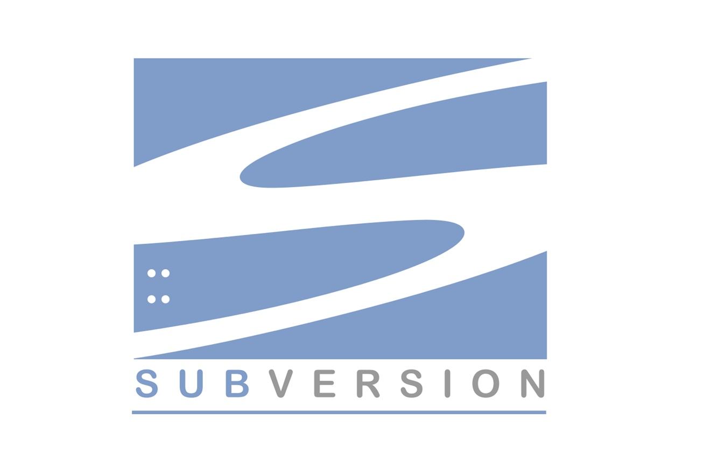
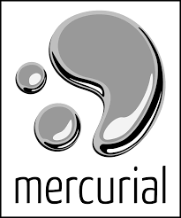
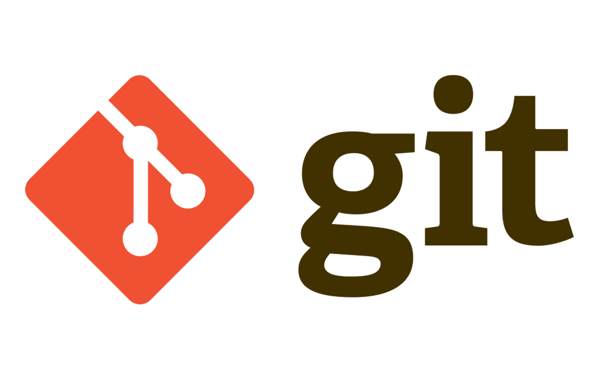

É um sistema com o objetivo de realizar o controle de versões de um código ou documento, realizadas tanto por um desenvolvedor ou por uma equipe deles. Permite acompanhar o histórico de um arquivo, também permite ir da versão atual para uma versão anterior do mesmo arquivo.
Existem dois tipos diferentes de Software de Versionamento:
CENTRALIZADO:Todos os Softwares se conectam a um repositório central com controle de versões, fazendo com que o sucesso do controle de versões fique por contra do servidor, correndo-se o risco de perder tudo. Ex:Software Subversion

Software Subversion
DISTRIBUÍDO:Os Softwares possuem um repositório local com controle de versões e fazem só atualizações no repositório central do servidor, tornando o sucesso do controle de versões independente do servidor, já que o histórico fica salvo em cada software, não sendo perdido todo o trabalho caso o servidor de algum problema.Ex:Softwares Mercurial e GIT

Software Mercurial
GIT
É um software de controle de versão distribuído que quando utilizado nos permite saber quais foram as alterações realizadas, quem fez cada uma das alterações e baixar essas mudanças em nossa máquina, além de poder revertê-las também.

GIT Software
Comandos GIT
Commit: Torna permanente um conjunto de alterações em um repositório;
Push: Envia alterações para o servidor no repositório remoto;
Fetch: Verifica se o seu repositório local está em sincronia com o remoto;
Pull: Sincroniza o repositório local com o remoto, atualizando as versões.
GITHUB
É uma plataforma de hospedagem de código-fonte e arquivos com controle de versão, funciona como um servidor que agrega todas as modificações realizadas por cada uma das pessoas envolvidas em um projeto, unificando as diferentes versões de código e seus históricos, permitindo compartilhamento entre as equipes.